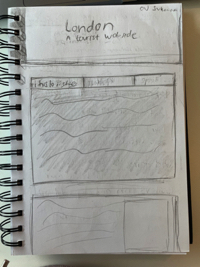

Welcome To London!
Welcome to the English Tourist Website! You may think of Britain as a beautiful countryside, with great history, stunning buildings, the iconic accents, football, fish and chips and of course the country of tea! Or maybe it´s Harry Potter you think of when I say England? Personally that´s what I think of.
No matter what you think of it, I'm sure that England is a great place to explore. In this website I hope to convince you that London is the best place to visit!

Fun Facts
- England’s national flower is the rose.
- The lion is the national animal of Britain, symbolizing bravery, courage, and strength.
- The King of Britain is Charles III.
- The Prime Minister is Keir Starmer.
- Champagne was invented in England in 1662.
- French was once the official language of England, starting from the 11th century.

British Museum
The British Museum is the national museum of Britain. Founded in 1753 by Sir Hans Sloane, it has a wide range of collections including Ancient Egypt, Asia, Greece, Rome, Africa, and European history.
Video goes here

Sketch of the webpage